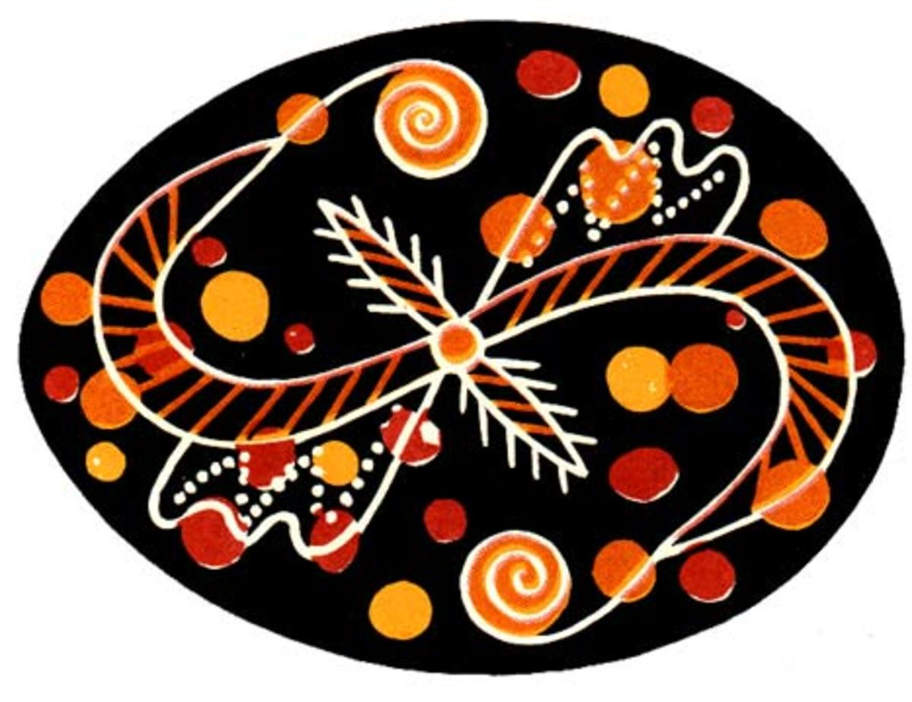

Покуття
 Писанки Покуття вирізняються великими малюнками, зображеними на зеленому, синьому, червоному, коричневому чи жовтому тлі, забарвлення якого є домінуючим. Мотиви тут переважають рослинні. Часто писанку ділять навпіл або на більше частин лініями. Цікавою ознакою місцевих писанок є складне тло, коли по всій площині яйця роблять яскраві кольорові плями контрастного кольору.